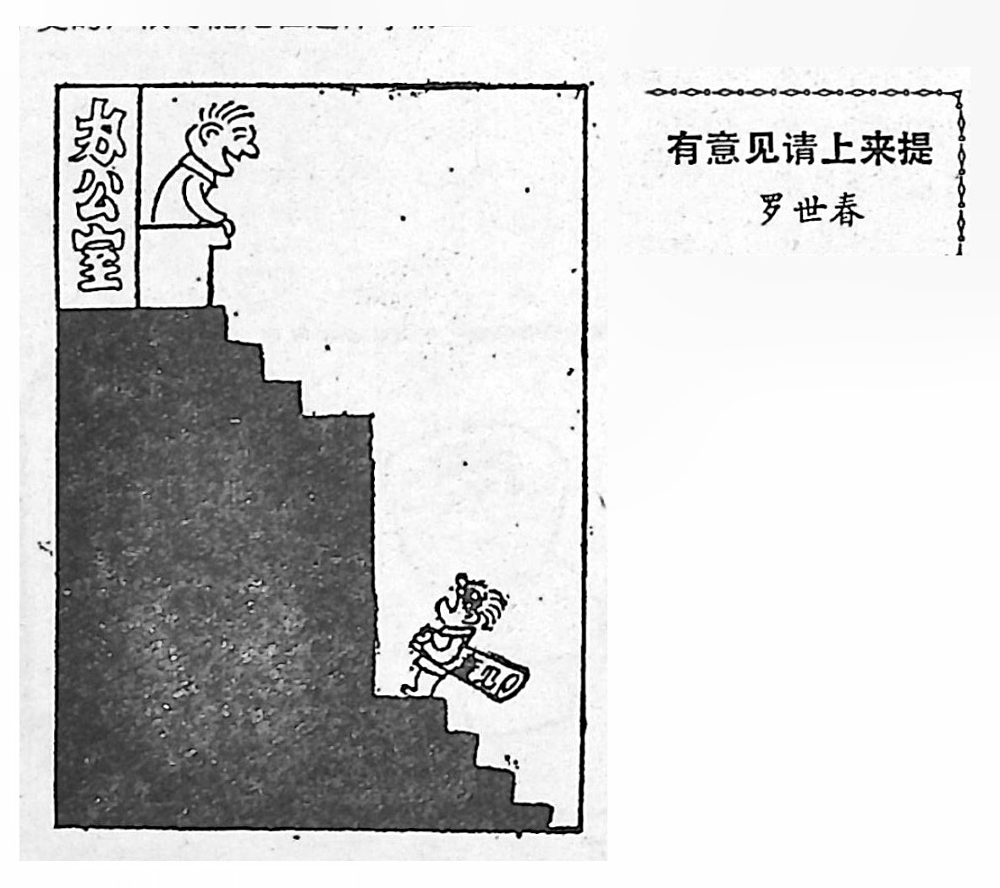

罗世春 《人事》1986年第11期（总第14期），第40页
有意见请上来提
If You Have Complaints, Come Up and Raise Them
- Text in the drawing
- 办公室
Office - Description
- An official leans out of a door marked 办公室 (office) at the top of an immense black staircase; a tiny petitioner with a rolled document struggles at the bottom.
- Artist
- Luo Shichun 罗世春
- Published in
- 《人事》1986年第11期（总第14期）, p. 40
- Themes
- Complaints and petitions · Bureaucratism · Paperwork and documents

Cite
Luo Shichun, “有意见请上来提” [If You Have Complaints, Come Up and Raise Them], Renshi (Personnel) 《人事》, 1986, no. 11, p. 40.